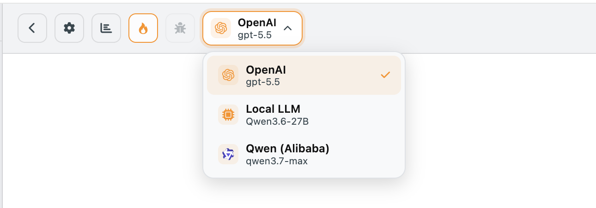
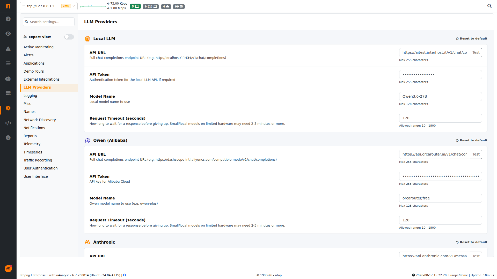

LLM Настройка
nAnalyst требует серверной части LLM для рассуждений и генерации естественного языка. Он поддерживает несколько поставщиков и может работать полностью локально с локальным сервером вывода.
Поддерживаемые серверные части
Бэкэнд |
Примечания |
|---|---|
Облако с оплатой по факту использования API |
|
Облако с оплатой по факту использования API |
|
OpenAI-совместимая конечная точка; региональная резидентность данных |
|
Облако с оплатой по факту использования API; OpenAI-совместимый |
|
Локальный вывод; OpenAI-совместимый сервер |
|
Локальный вывод; OpenAI-совместимый сервер |
|
Локальный вывод; OpenAI-совместимый сервер |
|
Любой OpenAI-совместимый API |
Установите собственный URL-адрес конечной точки |
Требование вызова инструмента
nAnalyst извлекает данные через собственный вызов инструмента провайдера (вызов функции). Модель и сервер должны это поддерживать, иначе каждый запрос завершится ошибкой провайдера.
лама-cpp: начинать
llama-serverс--jinja.вллм: начинать
vllm serveс--enable-auto-tool-choice --tool-call-parser <parser>, используя анализатор, соответствующий семейству моделей (см. документацию по вызову инструмента vllm).сленг: запустите сервер с
--tool-call-parser <parser>.
Поставщики облачных услуг (Anthropic, OpenAI, Qwen, AWS Bedrock) поддерживают вызов инструментов с помощью своих текущих моделей.
Конфигурация
Настройки LLM настраиваются в ntopng под Настройки -> LLM Поставщики.
Обязательные поля:
API Ключ — ключ вашего LLM провайдера API (не требуется для локальных серверов)
URL-адрес конечной точки — базовый URL-адрес API (значения по умолчанию предварительно заполнены для Anthropic и OpenAI)
Название модели — идентификатор модели (например,
claude-sonnet-4-6,gpt-4o,qwen3-235b-a22b,llama3.2)
Ключ API хранится локально в экземпляре ntopng и никогда не передается какой-либо службе, кроме настроенной конечной точки LLM.

nAnalyst LLM Настройка соединения
Выбор модели
Облачные API обеспечивают высочайшее качество рассуждений и рекомендуются для сложных расследований и разработки политики. Затраты зависят от объема использования (см. Статистика использования).
Локальные серверы вывода обеспечить полную конфиденциальность данных — никакие данные вообще не покидают ваше помещение, в том числе до LLM — за счет более низкого качества рассуждений для сложных задач. Они подходят для больших объемов простых запросов или сред со строгими требованиями к суверенитету данных.
Кончик
Для достижения оптимальных результатов используйте модель с контекстным окном размером не менее 32 000 токенов. Более широкий контекст windows позволяет nAnalyst включать больше доказательств за один шаг рассуждения.
Переключение моделей
Вы можете изменить активную модель LLM в любое время на панели модели LLM. Существующие диалоги сохраняют метаданные исходной модели в журнале использования. Новые сообщения будут использовать вновь выбранную модель.

nAnalyst Switch LLM Модель
Настройки каждого провайдера и тайм-аут запроса
Каждый встроенный провайдер (Local LLM, Qwen, Anthropic, OpenAI) имеет свой собственный независимый блок конфигурации в разделе Настройки -> LLM Поставщики: API URL-адрес, API Токен, название модели и Тайм-аут запроса (секунды).

Конфигурация для каждого провайдера: API URL-адрес, токен, название модели, тайм-аут запроса.
Тайм-аут запроса определяет, как долго ntopng ожидает ответа от этого конкретного провайдера, прежде чем отказаться от него, независимо от других настроенных провайдеров. Он принимает значения из от 10 до 1800 секунд. Небольшим локальным моделям, работающим на ограниченном оборудовании, часто требуется 2–3 минуты и более — соответственно увеличьте время ожидания, а не снижайте ожидания при выборе модели.
А Тест Кнопка рядом с каждым полем URL-адреса API отправляет упрощенный запрос для подтверждения доступности конечной точки и действительных учетных данных перед сохранением.
Каждый блок провайдера также имеет свой собственный Сбросить настройки по умолчанию действие (вверху справа от блока), которое очищает URL-адрес, токен, имя модели и тайм-аут этого провайдера до значений по умолчанию ntopng, не затрагивая других настроенных провайдеров.
Поставщик по умолчанию
Под Общий, Поставщик по умолчанию раскрывающийся список позволяет выбрать, какой настроенный провайдер (встроенный или пользовательский) будет использоваться автоматически при запуске нового чата nAnalyst.

Селектор поставщиков по умолчанию со списком встроенных и пользовательских поставщиков.
Изменение поставщика по умолчанию не влияет на уже идущие разговоры — оно применяется только к чатам, созданным после изменения. Вы по-прежнему можете переключить модель для отдельного чата на панели модели LLM в чате (см. Переключение моделей выше), переопределяя значение по умолчанию только для этого разговора.
Пользовательские поставщики
Помимо четырех встроенных поставщиков, nAnalyst поддерживает добавление произвольного количества пользовательские LLM поставщики под Настройки -> LLM Поставщики -> Пользовательские поставщики.. Это охватывает любую совместимую с OpenAI или Anthropic конечную точку, еще не включенную во встроенный список — например, автономный шлюз, второй локальный сервер вывода или внутренний маршрутизатор LLM.

Панель «Пользовательские LLM Поставщики», показывающая настроенного пользовательского поставщика.
Каждый пользовательский поставщик имеет:
Имя — метка, используемая для идентификации поставщика в переключателе моделей и раскрывающемся списке «Поставщик по умолчанию».
API URL-адрес — полная конечная точка завершения чата (совместимая с OpenAI/Anthropic)
API Токен — токен аутентификации для конечной точки; оставьте пустым при редактировании, чтобы сохранить текущий сохраненный токен без изменений
Название модели — идентификатор модели, который ожидает конечная точка
Тайм-аут запроса (секунды) — независимый таймаут для каждого провайдера, тот же диапазон 10-1800 с, что и у встроенных провайдеров
Чтобы добавить провайдера, нажмите + Добавить провайдера, заполните поля и нажмите Сохранить изменения. Можно настроить одновременно несколько пользовательских поставщиков, и все они отображаются рядом со встроенными поставщиками в переключателе моделей и раскрывающемся списке «Поставщик по умолчанию», поэтому вы можете проводить исследования на нескольких бэкэндах LLM, ничего не перенастраивая в середине сеанса. Пользовательского поставщика можно удалить с помощью команды Удалить кнопку на своем блоке.